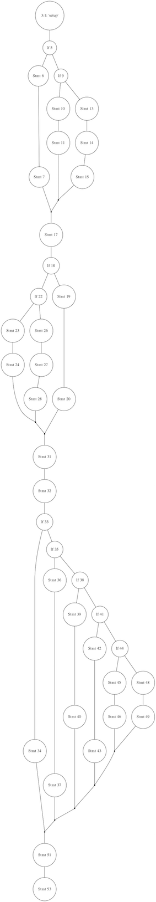

0x7df
0x7dfPython code analysis using Prospector
By 0x7df, Sat 11 April 2015, in category Programming
By 0x7df, Sat 11 April 2015, in category Programming
A recent blog post I came across introduced me to Prospector, a Python static analysis tool developed by Landscape. From the documentation:
Prospector is a tool to analyse Python code and output information about errors, potential problems, convention violations and complexity.
It brings together the functionality of other Python analysis tools such as Pylint, pep8, and McCabe complexity.
The primary aim of Prospector is to be useful ‘out of the box’. A common complaint of other Python analysis tools is that it takes a long time to filter through which errors are relevant or interesting to your own coding style. Prospector provides some default profiles, which hopefully will provide a good starting point and will be useful straight away, and adapts the output depending on the libraries your project uses.
So rather than configuring and individually using the various different static analysis packages mentioned, and wading through the potentially overwhelming output, Prospector provides a single interface to all of them, and is set up to give a more manageable level of information straight-away, without much user intervention. I won't repeat the sales pitch and the basic how-to that that post contains, but will go on from there to give a bit more information.
The first thing you might come across that might not be self-evident is the complexity rating given by the mccabe package. E.g.:
> prospector --strictness low
Messages
========
main.py
Line: 13
mccabe: MC0001 / run is too complex (17)
Check Information
=================
Started: 2015-04-11 15:59:47.759944
Finished: 2015-04-11 15:59:51.598176
Time Taken: 3.84 seconds
Formatter: grouped
Profiles: default, strictness_low, strictness_medium,
strictness_high, strictness_veryhigh, no_doc_warnings,
no_test_warnings, no_member_warnings
Strictness: low
Libraries Used:
Tools Run: dodgy, mccabe, pep8, profile-validator, pyflakes,
pylint
Messages Found: 1
The cyclomatic complexity metric was defined by Thomas J. McCabe in a 1976 paper (the PDF of which can be found here, or reproduced in the book "Structured Testing" which is available on Google Books). It is essentially a measure of the number of logical paths through a piece of source code: the higher the number, the higher the complexity, and therefore the more error-prone the code is likely to be. McCabe suggested "10... seems like a reasonable, but not magical, upper limit". The example given above was found to have a complexity of 17, so needs simplifying (e.g by breaking up into more than one routine).
For more detail, the McCabe paper gives a very good description which is hard to improve on:
Given a program we will associate with it a directed graph that has unique entry and exit nodes [vertices]. Each node in the graph corresponds to a block of code in the program where the flow is sequential and the arcs [edges] correspond to branches taken in the program. This graph is classically known as the program control graph... and it is assumed that each node can be reached by the entry node and each node can reach the exit node. For example the following is a program control graph with entry node \( a\) and exit node \( f\):
The following mathematical preliminaries will be needed...
Definition 1: The cyclomatic number \( V(G)\) of a graph \( G\) with \( n\) vertices, \( e\) edges and \( p\) connected components is
$$ V(G) = e - n + p $$Theorem 1: In a strongly connected graph \( G\) the cyclomatic number is equal to the maximum number of linearly independent circuits.
Note here that at this stage we are concerned with circuits - i.e. closed loops that start at a given node and return back to that same node - rather than paths.
Theorem 1 is applied to \( G\) in the following way. Imagine that the exit node \( f\) branches back to the entry node \( a\). The control graph \( G\) is now strongly connected (there is a path joining any pair of arbitrary distinct vertices) so Theorem 1 applies. Therefore the maximum number of linearly independent circuits in \( G\) is \( 9 - 6 + 2\). For example one could choose the following 5 independent circuits in \( G\):
$$ B1: (abefa), (beb), (abea), (acfa), (adcfa) $$It follows that \( B1\) forms a basis for the set of all circuits in \( G\) and any path through \( G\) can be expressed as a linear combination of circuits from \( B1\). For instance the path \( (abeabebebef)\) is expressible as \( (abea) + 2(beb) + (abefa)\).
To see how this works it's necessary to number the edges on \( G\) as in:
>
Now for each member of the basis \( B1\) associate a vector as follows:
The path \( (abea(be)^3fa)\) corresponds to the vector \( 2004200111\) and the vector addition of \( (abefa)\), \( 2(beb)\) and \( (abea)\) yields the desired result.
In using Theorem 1 one can choose a basis set of circuits that correspond to paths through the program. The set \( B2\) is a basis of program paths.
$$ B2: (abef), (abeabef), (abebef), (acf), (adcf) $$Linear combination of paths in \( B2\) will also generate any path. For example:
$$ (abea(be)^3f) = 2(abebef) - (abef) $$and:
$$ (a(be)^2(abef) = (a(be)^2f) + (abeabef) - (abef) $$The overall strategy will be to measure the complexity of a program by computing the number of linearly independent paths \( V(G)\), control the size of programs by setting an upper limit to \( V(G)\) (instead of using just physical size), and use the cyclomatic complexity as the basis for a testing methodology.
If you want to run mccabe separately from prospector you can do,
using:
> python -m mccabe mysourcefile.py
('If 209', 2)
("13:1: 'run'", 8)
You can add the -d option (documented
here)
to produce output that can be passed to the
Graphviz program
dot, which will plot the
graph. I.e.:
> python -m mccabe -d example.py | \\
dot -Tpng -o example.png
produces something like this:

As well as using the cyclomatic complexity as a metric of whether a particular piece of source code needs simplifying, it can also give an indication of the number of tests that are required. If the number of tests is less than the complexity metric, then clearly there must be some paths through that are not being tested. Obviously, it doesn't necessarily follow that, if the number of tests is equal to or greater than the complexity, then all paths are being tested - more than one test might be following a particular logical path. So having \( V(G)\) tests for a particular routine \( G\) is necessary but not sufficient to ensure full coverage of all the paths; but it seems like a good start.
Probably one of the most useful aspects of Prospector is the ability to fine-tune the warnings that are issued. For instance, once the strictness level is up to medium or above, you might start to get a lot of warnings from Pylint about invalid constant names:
example.py
Line: 1
pylint: invalid-name / Invalid constant name "nmats"
Line: 17
pylint: invalid-name / Invalid constant name "dcoeff"
Line: 21
pylint: invalid-name / Invalid constant name "tpower"
Line: 23
pylint: invalid-name / Invalid constant name "tmp0"
...
The PEP8 style guide suggests constants should be in upper case; I'm happy with this rule but in most cases that were identified for a particular project I used a trial run, I didn't regard the variable as a constant (e.g. like \( \pi\), \( c\), \( h\), etc.), but a variable that happens not to change - in a lot of the cases just because the code is incomplete and, at some point down the line, these will end up changing.
When we move to the veryhigh strictness level, another example that
comes up is trailing whitespace. I want to remove trailing whitespace
from lines of code; but because my editor automatically indents, blank
lines also get indented to the same level as the most recent non-blank
line. This whitespace on otherwise blank lines counts as trailing
whitespace, so I get far too many warning messages.
Thirdly, classes that have too few (fewer than two) public methods are warned against; the advice is that classes shouldn't be used for data storage, but should include functions. If the only purpose is data storage, then a data structure like a dictionary is more appropriate. However, again because of the work-in-progress status of the code being analysed, I've defined certain classes that currently only register data, but at some point will include methods. So in the meantime I want to turn this check off.
The fine-tuning is done using profiles. A profile is just a YAML file with some configuration information, so you can give different projects different rule sets by giving them their own configuration file. An example is:
strictness: veryhigh
ignore-paths: QA
pylint:
disable:
- invalid-name
- trailing-whitespace
- too-few-public-methods
The really nice part is that configurations can inherit from other
configurations. For example, Prospector's different --strictness
options are really just different pre-defined profiles, and the example
above has been set up to inherit from the --strictness veryhigh profile.
The project-specific tweaks are:
QA and its contents (which in this
project contains temporary/intermediate files). This can also be
achieved by using --ignore-paths QA on the command line.invalid-name messages from Pylint.trailing-whitespace messages from Pylinttoo-few-public-methods messages from PylintAs well as the default tools (Pylint, pep8, pyflakes, mccabe, dodgy and profile_validator), additional tools can be turned on either via the command line or by adding them to a profile. The useful extra options are:
--with-tool
pep257 on the command line, or add run: true to a pep257:
section in a profile file.pip install
prospector[with_vulture]. (NB this syntax doesn't work in a Z
shell.)pip install prospector[with_pyroma]. Note that using pyroma
implies the use of pep257.